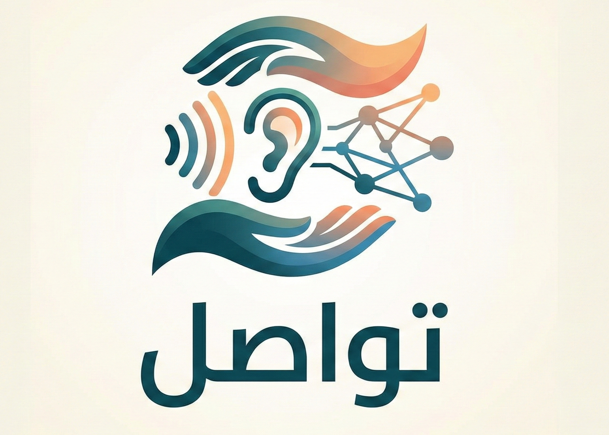

نسمعك بقلوبنا
منصة "تواصل" هي دليلك الشامل لدعم ذوي الإعاقة السمعية. نقدم التوعية، تعليم لغة الإشارة، وأفضل مراكز التخاطب لمستقبل أكثر إشراقاً.

عن الموقع
موقع خدمي يهدف لمد جسور التواصل بين ذوي الإعاقة السمعية والمجتمع. ستجد هنا فيديوهات إرشادية للآباء، ومحتوى ترفيهي تعليمي للأطفال، وقاعدة بيانات مخصصة لأشهر المراكز في جميع المحافظات.
- استخدم شريط التنقل العلوي للوصول للخدمات.
- فيديوهات الأطفال مصممة لتعمل بمجرد الضغط عليها.
- يمكنك البحث عن أقرب مركز لك من خانة "دليل المراكز".
التدخل المبكر: اكتشاف ضعف السمع مبكراً واستخدام المعينات السمعية يسهل عملية تطور النطق.
لغة الإشارة: تختلف لغة الإشارة من بلد لآخر، وليست لغة عالمية واحدة كما يعتقد البعض.
إرشادات وتوعية لأولياء الأمور
مجموعة من الفيديوهات الإرشادية لتعليم لغة الإشارة، وطرق التعامل الأمثل لدعم أطفالكم ذوي الإعاقة السمعية.
ما هي الإعاقة السمعية؟
مفهوم الإعاقة السمعية ببساطة، وكيف تؤثر على تواصل الطفل مع العالم من حوله.
الإعاقة ليست نهاية العالم
رسالة أمل وطمأنينة.. كيف يمكن لطفلك أن يعيش حياة طبيعية ومليئة بالنجاحات المبهرة.
اختلاف وليس ضعفاً
تغيير النظرة المجتمعية: الإعاقة السمعية مجرد طريقة مختلفة للتواصل وليست عجزاً أبداً.
التدخل المبكر: الخطوة الأهم
لماذا يعتبر التدخل في السنوات الأولى هو المفتاح السحري لتطور لغة طفلك؟
درجات الفقد السمعي
تعرف على المستويات المختلفة لضعف السمع وكيف نحدد طرق التدخل المناسبة لكل درجة.
علامات الإنذار المبكر
كيف تكتشفين وجود مشكلة في السمع أو التواصل لدى طفلك في شهوره الأولى.
تشجيع طفلك على التفاعل
خطوات عملية لمساعدة طفلك الأصم على اللعب والاندماج مع الأطفال الآخرين بثقة.
من حق الجميع أن يُفهم
أهمية لغة الإشارة والتواصل البصري في خلق بيئة تتقبل وتفهم احتياجات طفلك.
التعامل مع إحباط الآباء
الشعور بالتعب طبيعي.. كيف تتجاوزين هذه اللحظات الصعبة وتستعيدين طاقتك من جديد؟
فخ مقارنة الأطفال
لماذا يجب أن تتوقفي فوراً عن مقارنة تطور طفلك بالآخرين؟ ركزي على تقدمه الخاص.
دليلك لجلسات التخاطب
ما الذي يحدث داخل جلسة التخاطب؟ وكيف يكون دور الأسرة مكملاً لعمل الأخصائي.